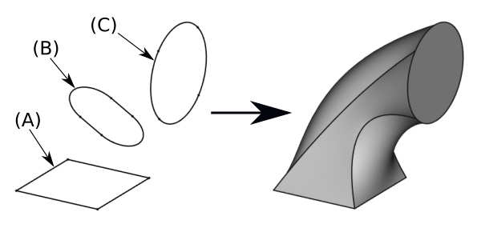

PartDesign AdditiveLoft/ro
|
|
| poziția meniului |
|---|
| Part Design → Additive loft |
| Ateliere |
| PartDesign |
| scurtătură |
| Nici unul |
| Prezentat în versiune |
| 0.17 |
| A se vedea, de asemenea, |
| PartDesign AdditivePipe/ro |
Descriere
Additive Loft creează un solid (printr-o extrudarea gen suprafață riglată) în corpul activ (Body) prin realizarea unei tranziții între două sau mai multe polilinii închise sau deschise (denumite și schițe sau secțiuni transversale) Dacă corpul conține deja funcții , Additiv Loft va fi lipit de ele.


În partea dreaptă: cross-sections (A), (B) and (C); Additive loft creat în partea dreaptă.
Cum se folosește
Dialog-based workflow
- Apăsați butonul Additive loft button.
- In the Select feature dialog, select a sketch to be used as first cross-section and click OK.
- Alternatively, a single sketch can be selected prior to pressing the Additive loft button.
- In the Loft parameters, press the Add Section button.
- Select a sketch in the 3D view. Repeat to select more sketches.
- Definiți opțiunile dacă trebuie și click pe OK.

Selection-based workflow
- Select several sketches. It is hereby important in what order you select them:
- The sketch selected at first will become the base profile object in the next step
- The sketches selected after the first one will become the loft sections. Also here the selection order is important: The sketch selected as second will become the first loft section, the one selected as third becomes the second section and so on. (You can change the section order any time later in the loft dialog by dragging sections in the list to the desired position.
- The first or last selection can also be a face of a 3D object.
- There are several ways to invoke the tool:
- Press the
 Additive Loft button.
Additive Loft button. - Select the Part Design → Additive Features → Additive Loft option from the menu.
- Press the
- Set options if needed and click OK.
Opţiuni
- Ruled surface: face tranziții drepte între secțiuni transversale. Dos nu se aplică la o mansardă/loft cu două secțiuni transversale. Dacă nu este bifată, tranzițiile vor fi netede.
- Closed: makes a transition from the last cross-section to the first, creating a loop.
- Apăsați butonul Remove Section pentru a șterge schița, selectându-l în vizualizarea 3D.
Notes
- Schițele trebuie să formeze profiluri închise.
- Nu se poate folosi instrumentul loft către un punct/ vertex.
- O secțiune transversală nu poate fi așezată pe același plan ca cea precedentă.
- Pentru a controla mai bine forma loftului, se recomandă ca toate secțiunile transversale să aibă același număr de segmente. De exemplu, pentru un loft între un dreptunghi și un cerc, cercul poate fi împărțit în 4 arce conectate.
Legături
- Part Loft Technical Details explains how a Part Loft is created, much of its content is relevant to the PartDesign Additive loft.
Proprietăți
See also: Property View.
A PartDesign AdditiveLoft object is derived from a Part Feature object and inherits all its properties. It also has the following additional properties:
Data
Loft
- DateSections (
LinkSubList): lists the sections used. - DateRuled (
Bool): see Options. - DateClosed (
Bool): see Options.
Part Design
See PartDesign Pad.
Side1
- DateUp To Face (
LinkSub): non applicable. - DateUp To Shape (
LinkSubList)
Side2
- DateUp To Face2 (
LinkSub): introduced in 1.1 - DateUp To Shape2 (
LinkSubList): introduced in 1.1
Sketch Based
- DateProfile (
LinkSub): the base profile object of the loft. - DateMidplane (
Bool): non applicable. - DateReversed (
Bool): non applicable. - DateAllow Multi Face (
Bool): non applicable.
- Helper tools: New Body, New Sketch, Attach Sketch, Edit Sketch, Validate Sketch, Check Geometry, Sub-Shape Binder, Clone
- Modeling tools:
- Additive tools: Pad, Revolution, Additive Loft, Additive Pipe, Additive Helix, Additive Box, Additive Cylinder, Additive Sphere, Additive Cone, Additive Ellipsoid, Additive Torus, Additive Prism, Additive Wedge
- Subtractive tools: Pocket, Hole, Groove, Subtractive Loft, Subtractive Pipe, Subtractive Helix, Subtractive Box, Subtractive Cylinder, Subtractive Sphere, Subtractive Cone, Subtractive Ellipsoid, Subtractive Torus, Subtractive Prism, Subtractive Wedge
- Boolean: Boolean Operation
- Dress-up tools: Fillet, Chamfer, Draft, Thickness, Defeaturing
- Transformation tools: Mirror, Linear Pattern, Polar Pattern, Circular Pattern, Path Pattern, Point Pattern, Multi-Transform, Scale
- Additional tools: Shape Binder, Involute Gear, Sprocket, Shaft Design Wizard
- Context menu: Set Tip, Move Object To…, Move Feature After…, Toggle Suppressed
- Preferences: Preferences, Fine tuning
- Getting started
- Installation: Download, Windows, Linux, Mac, Additional components, Docker, AppImage, Ubuntu Snap
- Basics: About FreeCAD, Interface, Mouse navigation, Selection methods, Object name, Preferences, Workbenches, Document structure, Properties, Help FreeCAD, Donate
- Help: Tutorials, Video tutorials
- Workbenches: Std Base, Assembly, BIM, CAM, Draft, FEM, Inspection, Material, Mesh, OpenSCAD, Part, PartDesign, Points, Reverse Engineering, Robot, Sketcher, Spreadsheet, Surface, TechDraw, Test Framework
- Hubs: User hub, Power users hub, Developer hub